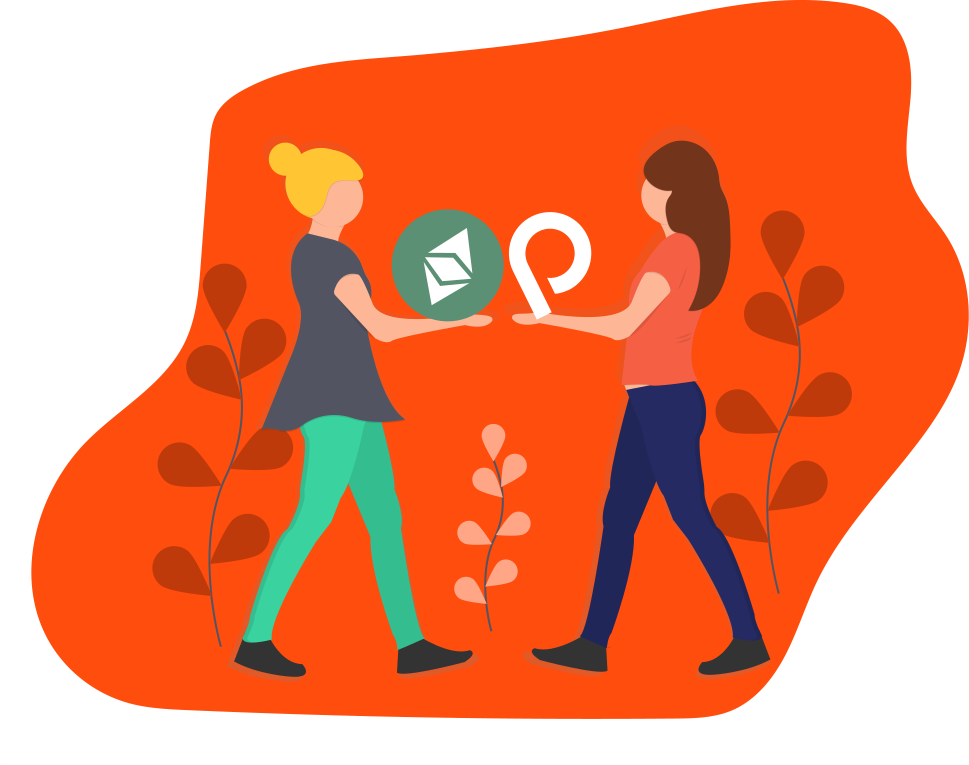

If you would like to see this team contributing more to the community, you can donate us on Patreon or send Etherium to our wallet to help us paying our server bills or to order us a coffee (because we need it after long hours of coding).
Mercode's freedom-preferential alternative running, seeding and containing several projects, blogs and sites by providing a public Zeronet to the community members.
Status
hub.mercode is a decentralized social network which is made by Mercode team forked from the zot protocol. At this network, every user has the permission of opening channels infinitively (depends to the status of the server). Those channels can be a profile, infographic, forum, blog, wiki and more depending to the needs of the end user. Also there’re official channels opened by Mercode team for newbies to let them socialise.
Status ProceedMerOS is a Nix based, user friendly Linux distro.
StatusUsing Italian Scentific High School as its hq, HackUp is an IT club made up with high school and university students around The World.
Contribute Proceed